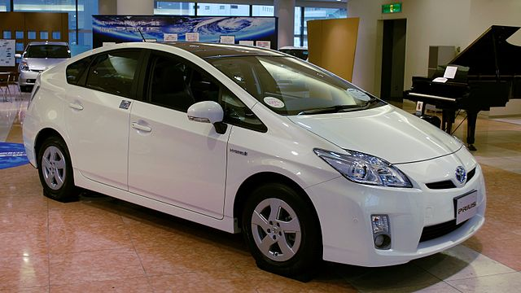
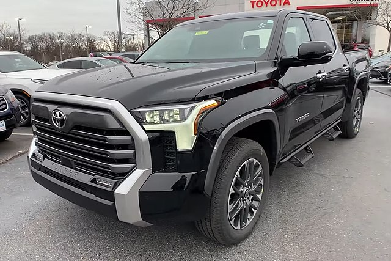
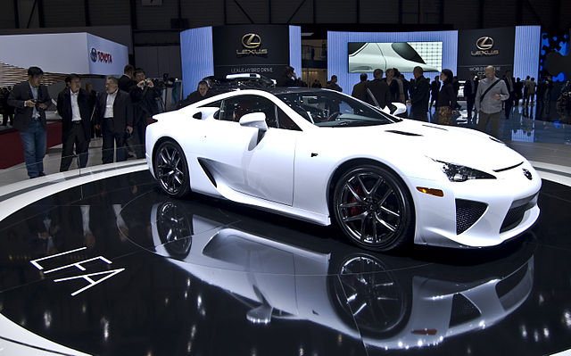

Toyota Motor Corporation (яп. トヨタ自動車株式会社 тоёта дзидо:ся кабусики-гайся, TYO: 7203.T) (кратко: Toyota — «Тоёта», по-русски чаще пишется «Тойота») — крупнейшая японская автомобилестроительная корпорация, также предоставляющая финансовые услуги и имеющая несколько дополнительных направлений в бизнесе. Является крупнейшей автомобилестроительной публичной компанией в мире, а также крупнейшей публичной компанией в Японии. Главный офис компании находится в городе Тоёта, префектура Айти, Япония. Компания занимает 6 место в Fortune Global 500 (2018 год).
Toyota Motor Corporation является основным членом Toyota Group. С этой компанией в основном ассоциируется бренд Toyota. Свою деятельность компания начинала с выпуска автоматических ткацких станков.
История
В 1924 году Сакити Тоёда изобрел автоматический ткацкий станок Тойода модель G. Принцип дзидока, означающий, что машина останавливается сама, когда возникает проблема, стал позже частью производственной системы Тойоты. Ткацкие станки собирались на небольшой производственной линии. В 1929 году патент на автоматический ткацкий станок был продан британской компании, полученная от продажи сумма стала стартовым капиталом для развития автомобильного производства
В 1929 году Киитиро Тоёда, сын Сакити Тоёды, совершил поездки в Европу и США для изучения автомобильной промышленности и в 1930 году приступил к разработке автомобилей с бензиновым двигателем. В 1933 году компания по производству автоматических ткацких станков Toyoda Automatic Loom Works создала новое отделение, специализирующееся на производстве автомобилей; его руководителем стал Киитиро Тоёда[6]. Правительство Японии всячески поощряло такую инициативу компании Toyoda Automatic Loom Works. В 1934 году компания произвела свой первый двигатель типа А, который был использован в первой модели легкового автомобиля А1 в мае 1935 года и в грузовике G1 в августе 1935 года. Производство пассажирского авто модели АА началось в 1936 году. Ранние модели напоминали уже существовавшие модели Dodge Power Wagon и Chevrolet.
Toyota Motor Co., Ltd. была основана в качестве самостоятельной компании в 1937 году. Несмотря на то, что фамилия основателей компании звучит как Тоёда, для упрощения произношения и в качестве символа отделения деловой деятельности от семейной жизни, компании было решено дать имя «Тоёта». В Японии название «Тоёта» (トヨタ) считается более удачным названием, чем «Тоёда» (豊田), так как 8 считается числом, приносящим удачу, а слово «Тоёта», написанное катаканой, как раз состоит из 8 черт.
Во время Второй мировой войны компания практически занималась только производством грузовиков для Японской императорской армии. Из-за скудной ресурсно-сырьевой базы и острого дефицита сырья для производства узлов и агрегатов военной техники в Японии того времени военные грузовики делались в самых упрощенных вариантах, например, с одной фарой. Некоторые исследователи считают, что война для Японии быстро закончилась из-за американских бомбардировок производственных мощностей заводов «Тойота» в городе Аити.
После войны в 1947 году начался выпуск коммерческих пассажирских авто модели SA. В 1950 году была создана отдельная компания по продажам — Toyota Motor Sales Co. (она просуществовала до июля 1982 года). В апреле 1956 года была создана дилерская сеть Toyopet. В 1957 году Toyota Crown стал первым японским автомобилем, экспортируемым в Америку (не только в США, но и в Бразилию). 1 января 1959 город Коромо, в котором располагаются заводы и главный офис компании, был переименован в Тоёта.
Тойота начала расширяться быстрыми темпами в 1960-е годы. Первый автомобиль марки «Тойота», произведённый за пределами Японии, вышел с конвейера в апреле 1963 года в городе Мельбурн, в Австралии.
В самой Японии автомобили данного производителя являлись самыми продаваемыми. Так, в 1992 году на долю Тойоты приходилось 40 % машин, принадлежавших населению.
Автомобили

По состоянию на 2009 год, официальный список автомобилей Toyota насчитывает около 70 разных моделей, продаваемых под собственным брендом, включая седаны, купе, минивэны, пикапы, гибриды и кроссоверы. Многие из этих моделей выпускаются как легковые седаны, которые варьируются от субкомпактного Toyota Vitz/Yaris и компактного Corolla, до среднеразмерного Camry и полноразмерного Avalon. Минивэны представлены моделями Previa/Estima, Sienna и другими. Несколько компактных автомобилей, таких как xB и tC, продаются под брендом Scion.
Внедорожники SUV и кроссоверы
Кроссоверы от Toyota выстраиваются от компактных Matrix и RAV4, до среднеразмерных Venza и Kluger/Highlander. Внедорожники SUV — от среднего 4Runner до полноразмерного Land Cruiser. К другим внедорожникам относятся Prado, FJ Cruiser, Fortuner и Sequoia.
В феврале 2019 года Toyota представила дизайн и параметры нового внедорожника Toyota Sequoia. Известно, что это будет автомобиль с системой полного привода, шестиступенчатой автоматической трансмиссией и бензиновым двигателем, объёмом 5,7 литров и мощностью порядка 367 л. с.
Пикапы
Toyota впервые вышла на рынок пикапов в 1947 году с моделью SB, которая продавалась только в Японии и на некоторых азиатских рынках. За ним, в 1954 году последовал RK (переименованный в 1959 году как Stout) и в 1968 году компактный Hilux. В дальнейшем, Hilux (известный на некоторых рынках просто как Pickup) прославился чрезвычайной прочностью и надежностью, и многие из этих пикапов ещё с конца 1970-х годов по сей день передвигаются по дорогам, некоторые с пробегом более чем в 300 000 миль (480 000 км). В конечном итоге появились версии с расширенной и двойной кабинами, Toyota продолжает выпускать пикапы сегодня под разными названиями в зависимости от рынка.
Придя к успеху в классе компактных пикапов в США, Toyota решила войти в традиционный рынок полноразмерных пикапов, представив T100, выпускавшийся с 1993 по 1998 годы. Несмотря на длину кузова в 8 футов (2,4 метра), подвеска и характеристики двигателя все ещё были похожи на компактный пикап. Он оказался экономичным и надежным, как любой типичный пикап Toyota, но его продажи не росли.
В 1999 году Toyota сменила T100 на большую модель Tundra. Tundra получила также двигатель V8, чего на предшественнике не было. Все минусы, присутствующие в этом автомобиле, и указанные критиками, были исправлены во втором поколении в 2007 году. Автомобили Tundra собирались американском Сан-Антонио, штат Техас.
Вне США, Toyota выпускает Hilux в стандартном и двух-кабинном кузовах, с бензиновыми и дизельными двигателями, в версиях 2WD и 4WD. Телешоу Top Gear выпустило два эпизода с автомобилем Hilux, признав его «практически неуязвимым».
Автомобили класса «премиум»

По состоянию на 2009 год, компания продавала девять представительских фирменных моделей своего подразделения Lexus, варьировавшихся от седана LS до кроссовера RX и внедорожника LX. Представительские седаны, выпускаемые под брендом Toyota включают модели Century, Crown и Crown Majesta. Ограниченной серией выпускается модель для Императора Японии, которая называется Century Royal.